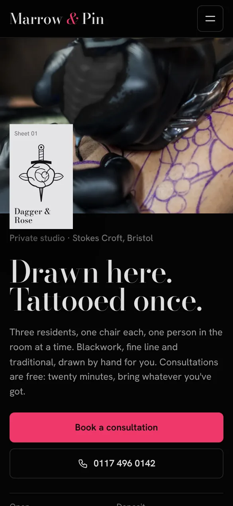

Marrow & Pin
The flash wall turns each stencil into healed skin, and one tap asks for that piece.

The flash wall hangs nine stencils like plates in an artist's book: hover or tap one and the skin comes up, the ink runs down and the stencil goes with it. Pin a piece and “Ask for this piece” fills in the enquiry with the artist, size and idea. Then the three residents in type with their next free week, how booking works, aftercare in five lines and a short form.
This is the build itself, not a recording. Use it like a customer would, or press Show me in full screen and watch it work.

What it does for the owner
Your own drawings can be the website, and they can still take the booking.
Built for the trades that sell by showing the work: the drawings are the design, so the page had to be made of them rather than of photographs of them.
- The flash wall shows each design as it heals on skin, so a visitor can picture it on themselves
- “Ask for this piece” fills in the enquiry with the artist, the size and the idea, so the artist can quote from the first message
- Each resident's prices and next free week are worked out from today, so nobody asks when they can get in
- How booking works and aftercare in five lines, which answers the questions that take up the studio’s phone
What comes with a site like this
- Built for your tradeDesigned from scratch around how your customers decide, like the tattoo studio idea at the heart of Marrow & Pin. No theme, no template.
- Quick on a phoneWritten by hand with nothing bought in, so it loads fast on a phone signal and works with a thumb.
- Found on Google and in AI answersTitles, descriptions, schema and an llms.txt set up page by page. How the search side works.
- Wired into the systemMissed calls get a text back, bookings land in the diary and reviews get asked for. See the system.
- Yours from day oneYour name, your numbers and your domain, owned by you. No platform holding it hostage.
- A fixed price firstA free 45-minute call, then a fixed price before anything is built.
Tattoo studio, Bristol is invented, so every person, number and review on it is fictional. Photographs from Pexels, graded and cropped for this page. Nobody pictured is presented as staff.